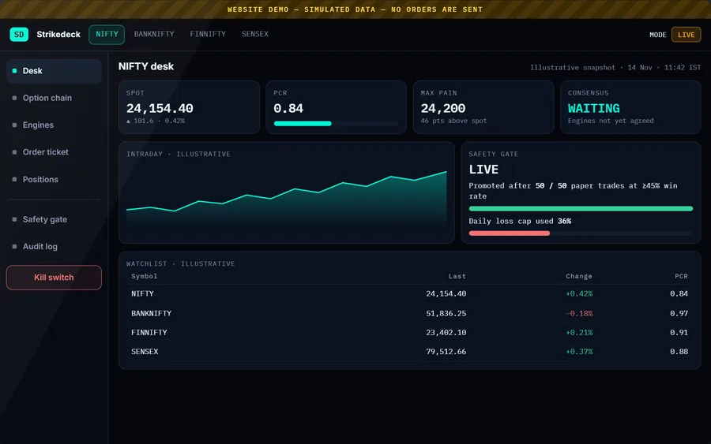
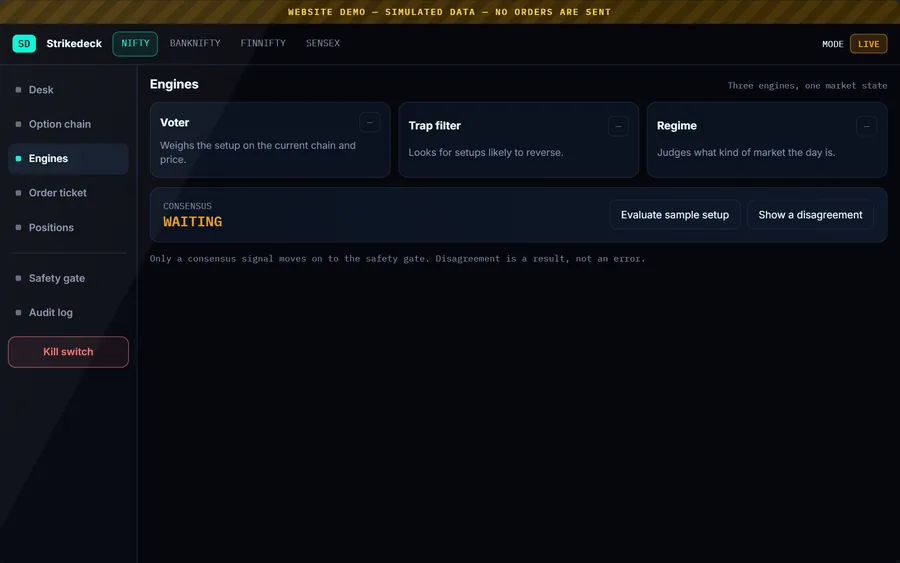
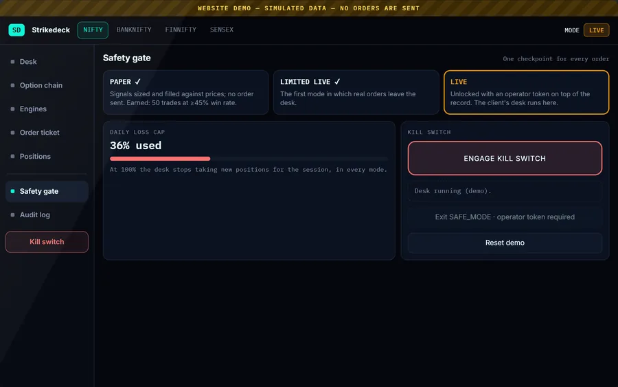

Case study · Options desk · simulated demo
Strikedeck
An options desk that trades only after a safety gate.
Open the live demo Start a project like this
- Type
- Options trading desk, Indian index options
- Platform
- Web desk with Flutter clients
- Built with
- React, Express 5, Socket.IO, PostgreSQL
- Status
- Delivered to a client. The public demo is simulated.
Inside the product. Real screens from the working demo.

The desk
Watchlist, option-chain statistics, the gate and the engines’ consensus on one screen.

Three engines must agree
A voter, a trap filter and a regime engine judge the same market. Without agreement the desk shows WAITING.

The safety gate
A promotion ladder, a daily loss cap checked before each order, and a kill switch.
The problem
Most trading tools treat risk controls as a settings page. The user ticks a box, and the box can be unticked at the worst possible moment.
What we built
Strikedeck makes the gate part of the product. The desk starts in PAPER mode: every signal is logged and filled against live prices, but no order leaves the machine.
It has to complete 50 paper trades at a 45 percent win rate or better before it is promoted to LIMITED LIVE. Full LIVE still needs an operator token.
Decisions that matter
- Ticks, open interest and Greeks stream over Socket.IO for 24 symbols.
- A signal exists only when all three engines agree.
- The daily loss cap applies in every mode, paper included.
- An append-only audit log records what the desk did and why.
About the demo
Website demo only: simulated data, no broker connection, no orders sent. Nothing here is investment advice, and this page makes no claim about trading performance.